Illustrations in R
Data visualisation in R with real data: Arctic sea ice, global temperature, Gapminder, EU wages, the Greek economy, debt and population, colour and illusions.
Climate
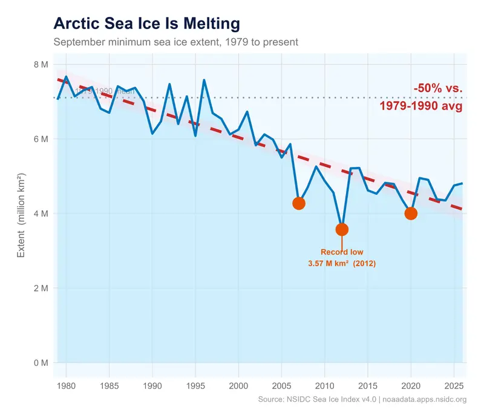
Arctic Sea Ice Is Melting 45 Years of Decline in NSIDC Data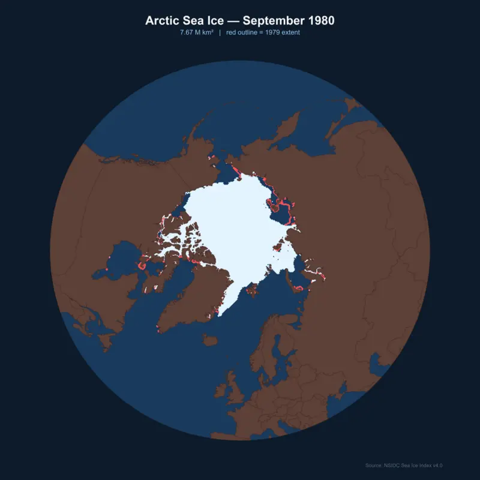
Climate Data Visualisation An Arctic Sea Ice GIF and a Climate Spiral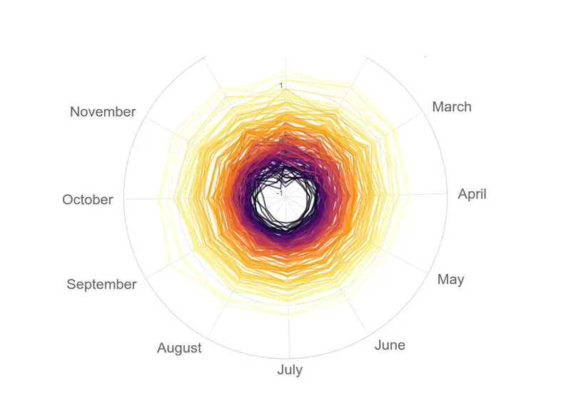
NASA GISS Global Temperature Anomaly Spider Plots, Time Series and a Heatmap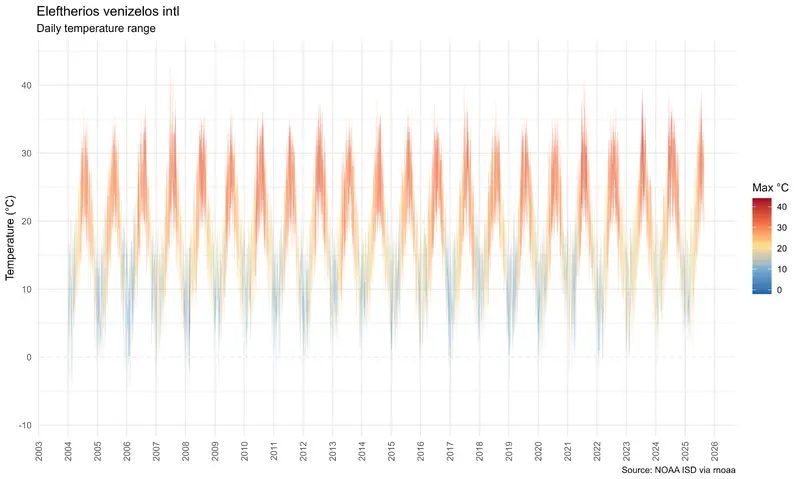
Airport Weather Analysis Temperature Ribbons and Heatmaps From NOAA ISD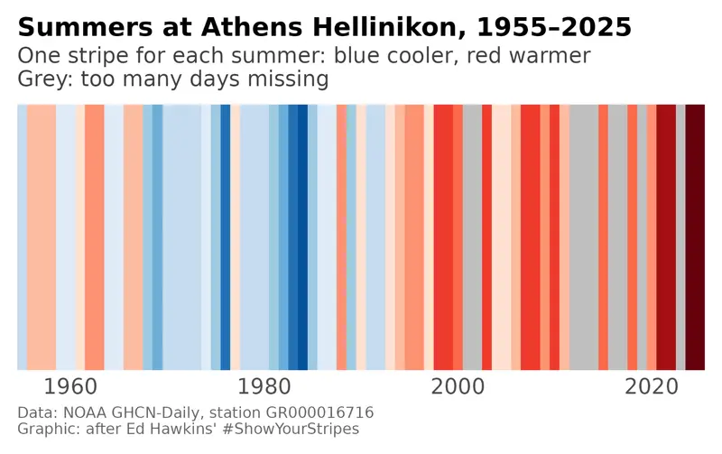
Athens Is Getting Hotter Hot Days, Tropical Nights and Heatwaves Since 1955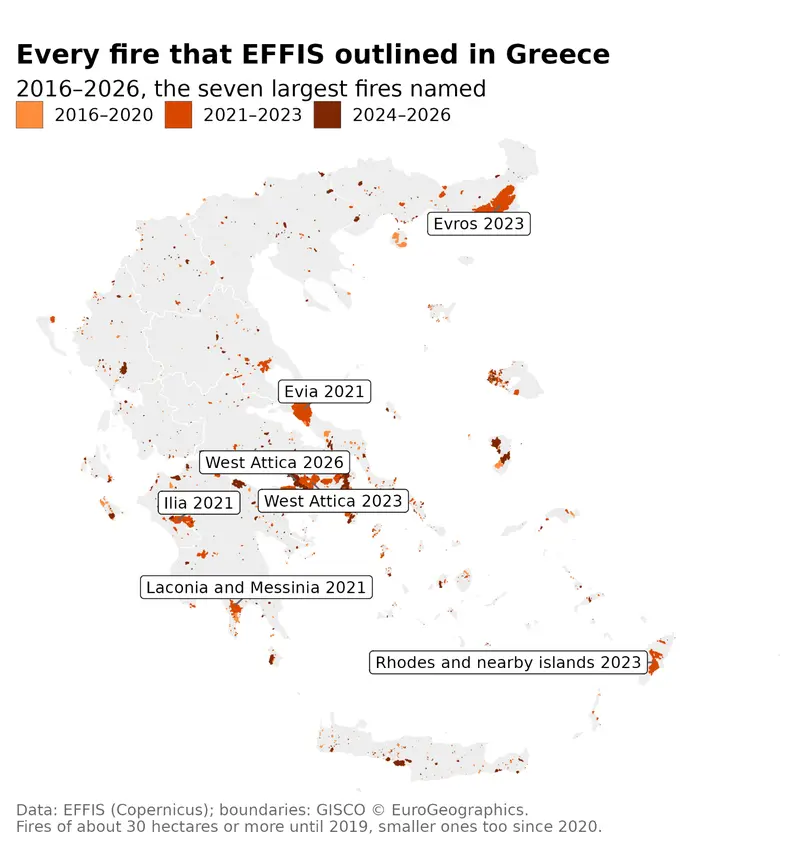
Greece Burning How Much, When and Where Wildfires Burn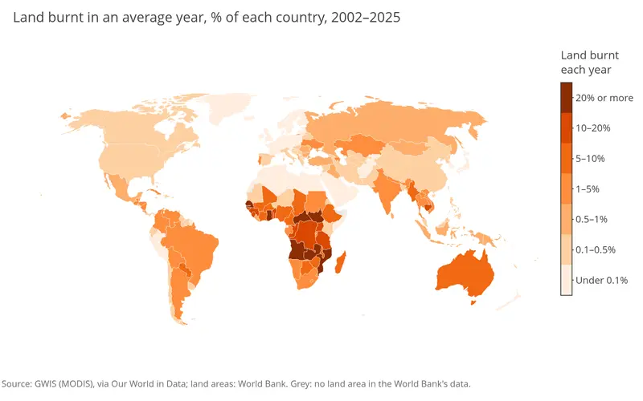
Where the World Burns Wildfires on Every Continent Since 2002
Greece
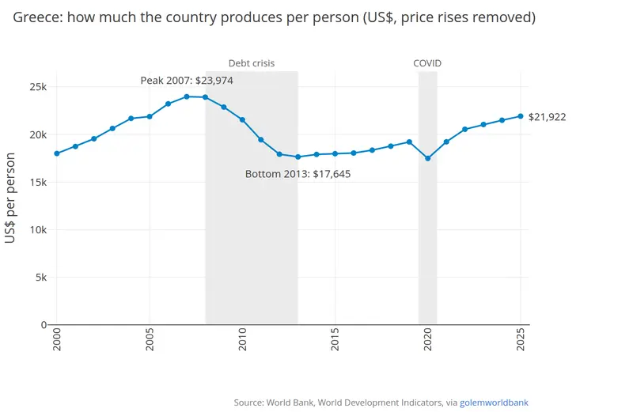
Greece Since 2000 Boom, Crisis and Recovery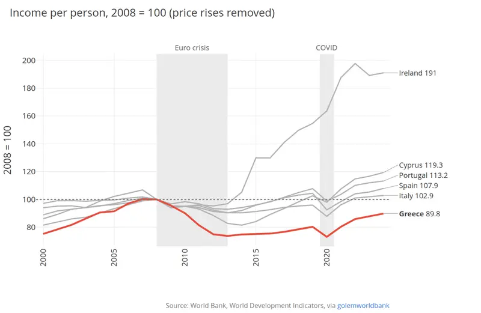
Same Crisis, Different Endings Greece and the Euro Crisis Countries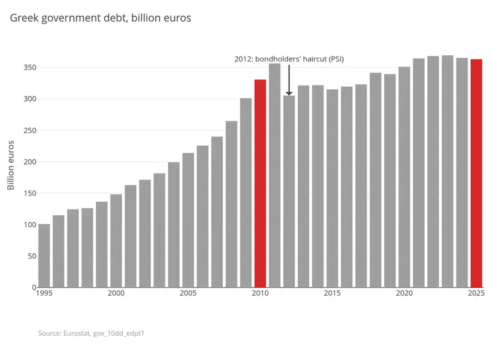
Greek Public Debt How Much, to Whom, and Can Greece Repay It?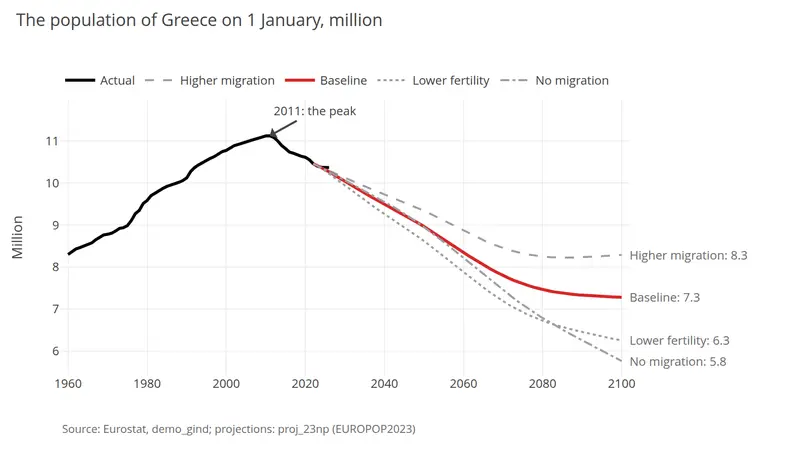
Fewer and Older Greece’s Population, Its Economy and Its Debt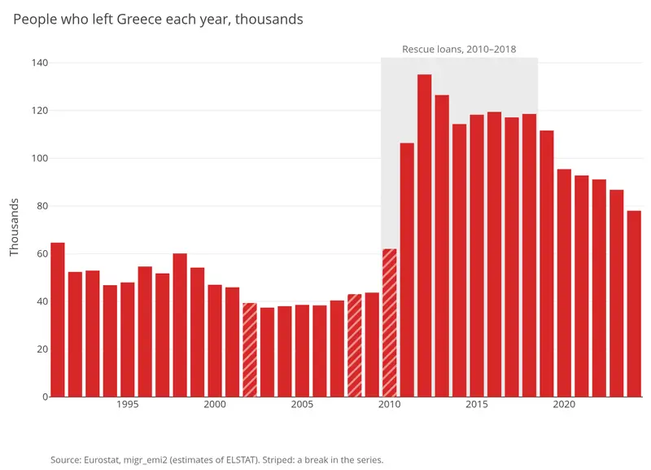
The Greeks Who Left How Many, Where To, and Who Came Back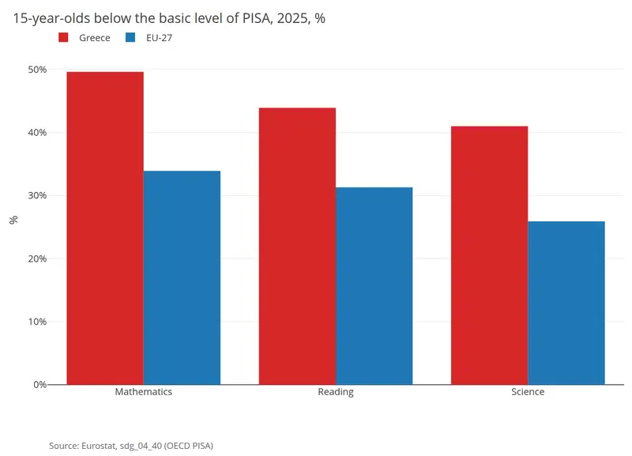
Greece at Work Education, Skills, Jobs and Crime Compared with the EU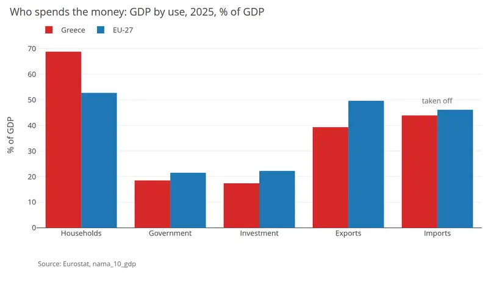
What Greece Makes, Sells and Buys And Can It Feed Itself?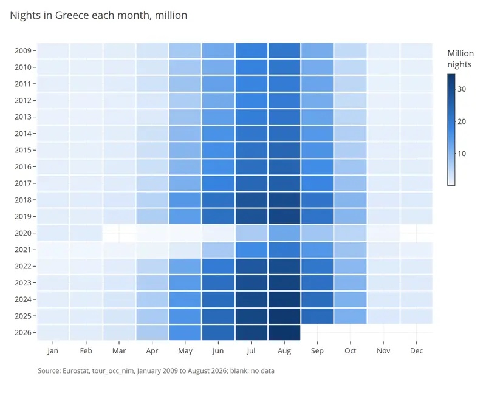
Greece’s Summer Economy Who Comes, When, Where and What They Spend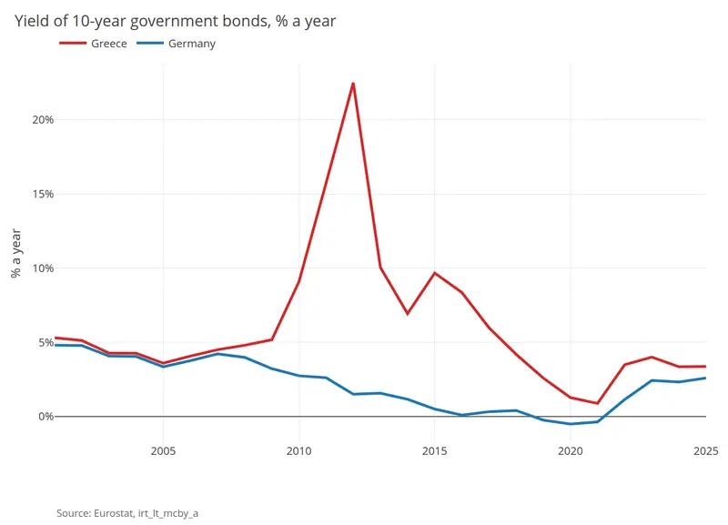
Is Greece a Good Place to Invest? Risk, Costs, the State and the Courts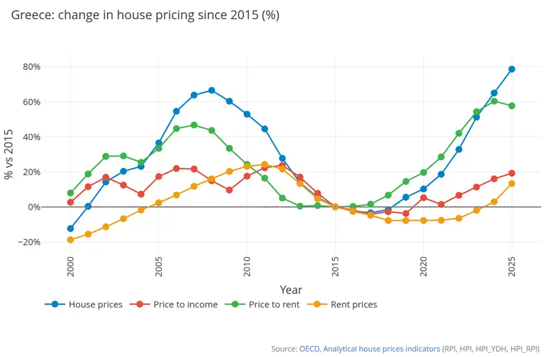
Greek Housing Race Rents, House Prices and Affordability in Europe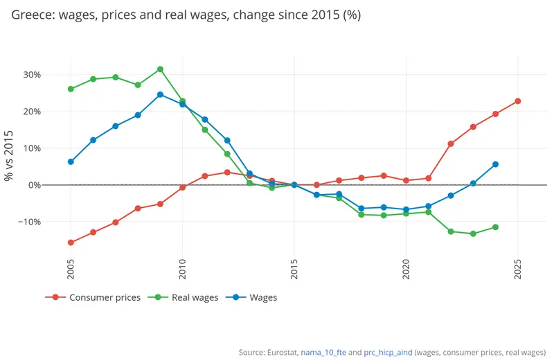
Greek Wages Race Salaries, Consumer Prices and Real Wages in Europe
Europe and the world
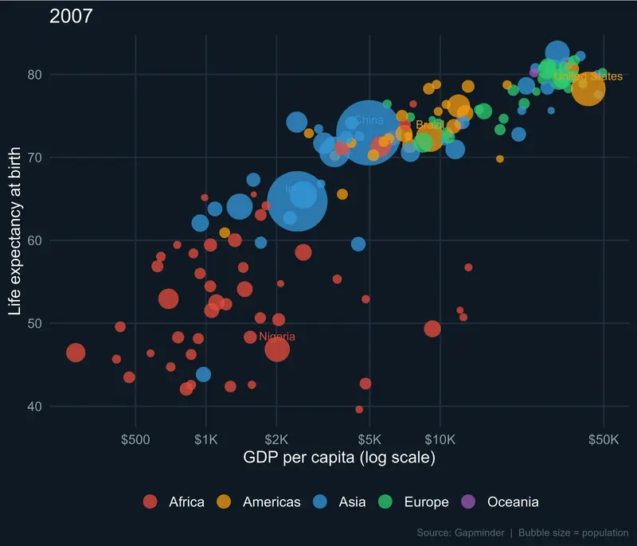
Hans Rosling’s Bubble Chart Life Expectancy Against Income, Animated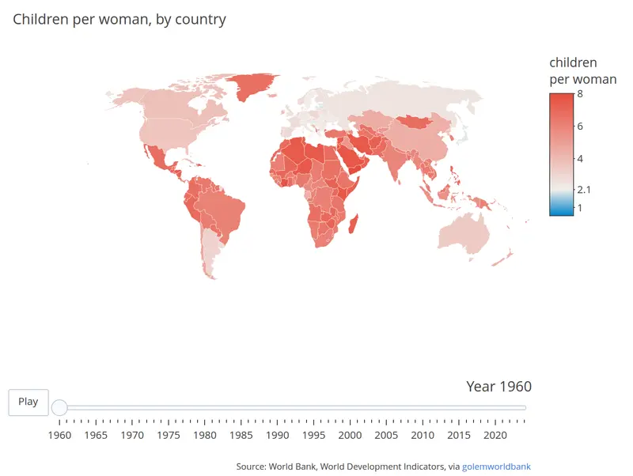
The World Is Having Fewer Babies Fertility and Ageing Since 1960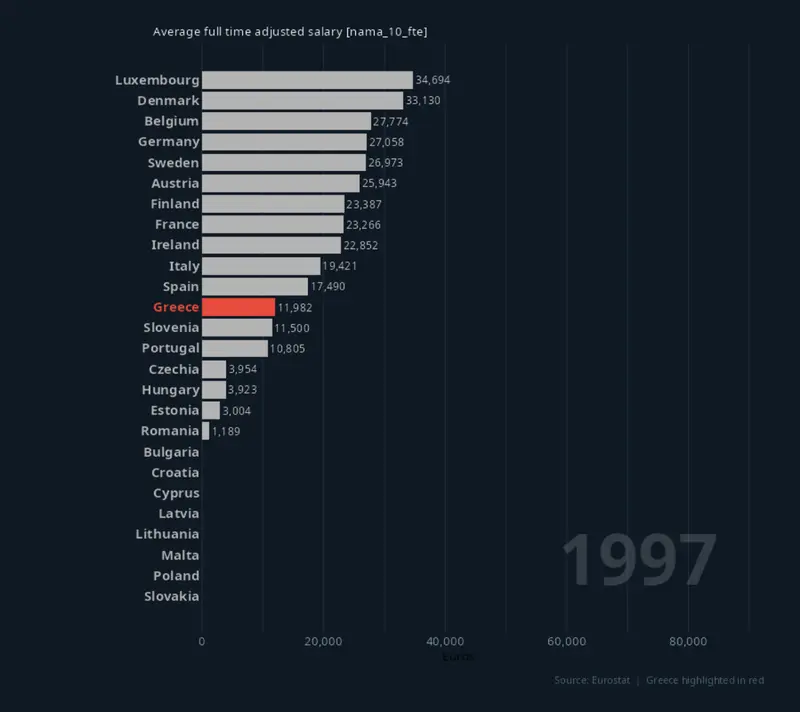
EU Salary Race Average Full-Time Adjusted Wages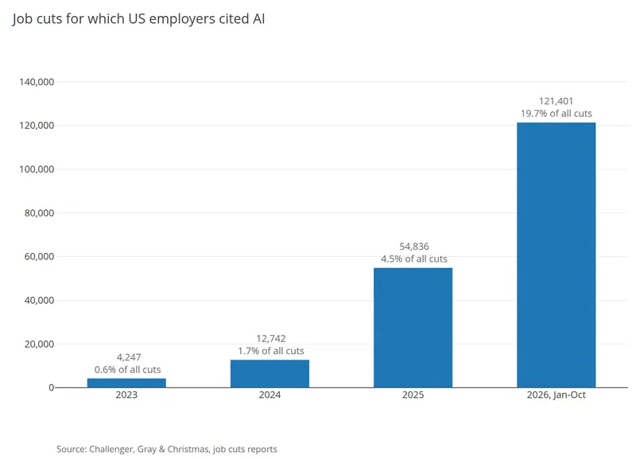
Fired for AI, Hired Back What Happens When Companies Replace Workers with AI